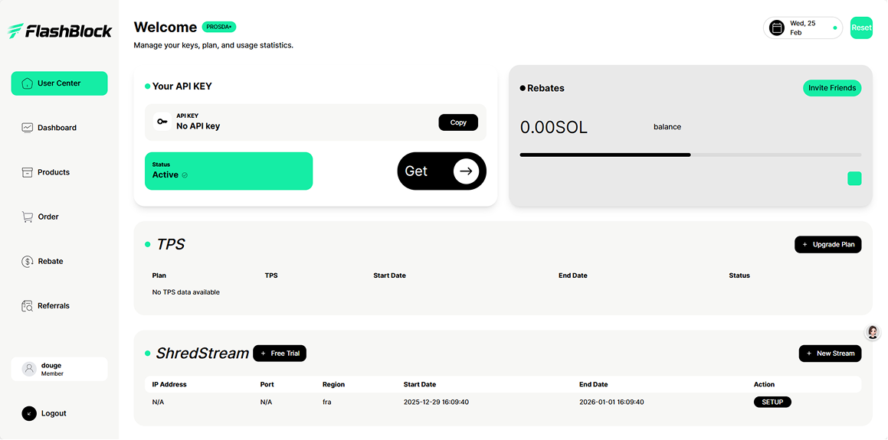
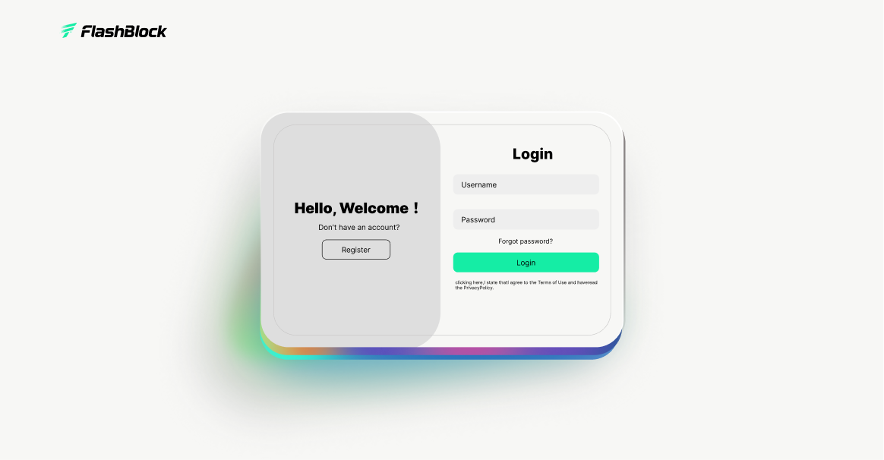
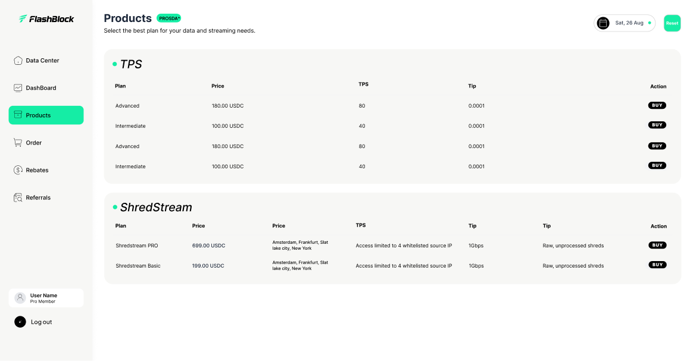
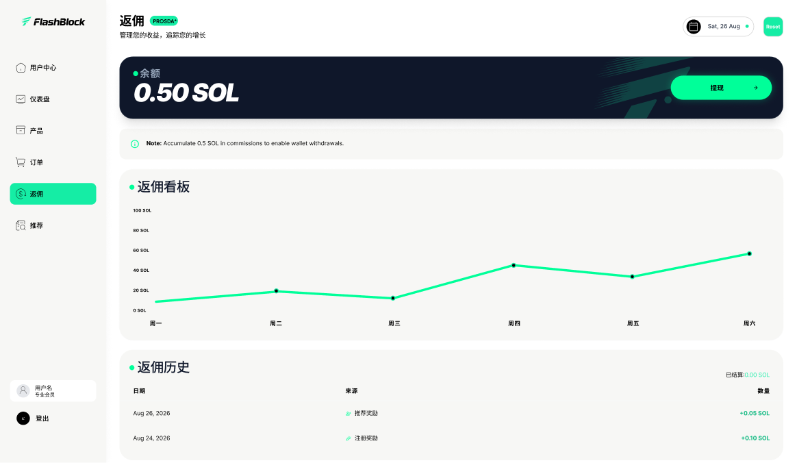
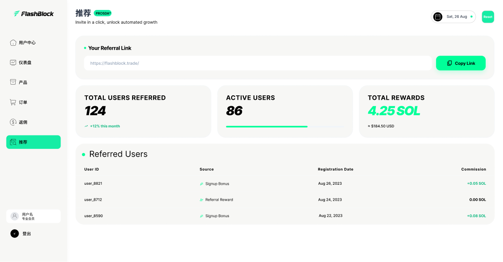
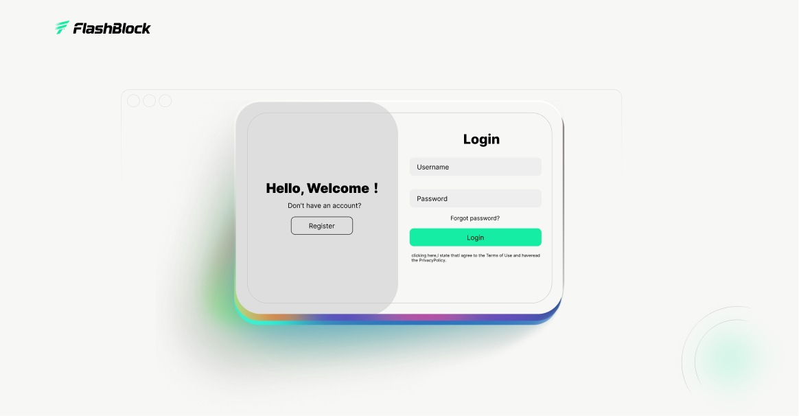
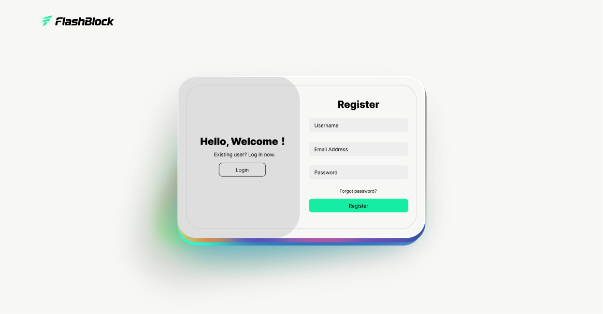
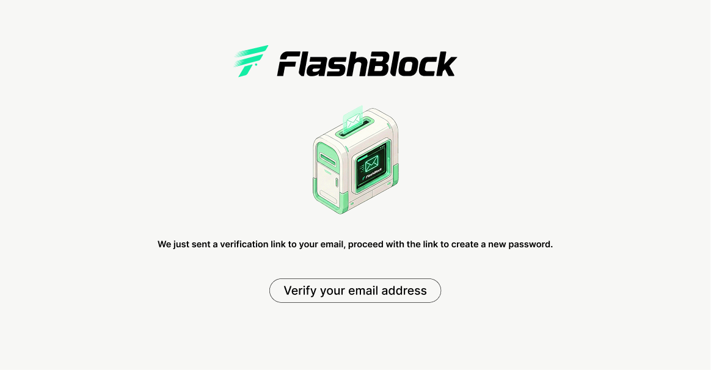

用户中心先建立掌控感
首页聚合 API Key、套餐状态、TPS 和 ShredStream 信息，目的是让用户一进系统就看到关键资产与当前状态， 先建立“知道自己拥有什么”的掌控感。
围绕 FlashBlock 用户端体系展开，覆盖登录注册、用户中心、产品购买、订单追踪、 返佣管理与推荐增长等关键模块。整体展示重点放在系统层级、页面职责和业务链路之间的关系， 让不同页面能够被看作一套完整的用户系统，而不是分散的后台截图。


用户中心、产品购买、订单追踪、返佣和推荐机制被组织成连续的业务路径， 让用户进入系统后能够快速理解当前位置、当前状态和下一步动作。
首页聚合 API Key、套餐状态、TPS 和 ShredStream 信息，目的是让用户一进系统就看到关键资产与当前状态， 先建立“知道自己拥有什么”的掌控感。
产品页负责做选择，订单页负责做确认和追踪，两者被拆成明确角色。 这样用户不会在同一个页面里同时处理“购买决策”和“历史回看”，降低认知切换成本。
返佣页负责给出即时收益反馈，推荐页负责扩张用户网络。 一个偏“结果可见”，一个偏“增长可持续”，它们一起把商业模式从购买行为延展到了留存和裂变。
页面内容按四个阶段展开，分别对应总览建立、交易路径、收益反馈和增长闭环， 用连续的阅读节奏呈现这套系统的设计流程。
用户中心的核心目标是先建立状态认知。 API Key、TPS、ShredStream 和返佣余额被集中到同一界面中，优先呈现用户最需要确认的资源与能力。
产品页负责比较方案，订单页负责查看历史和支付状态。 两个页面都与购买相关，但职责被明确拆分，用来降低选择和回查时的认知切换成本。

返佣页的重点是让收益变化能够被快速感知。 余额被放大为主视觉锚点，再通过趋势图和历史记录补充变化来源，形成先结果、后解释的层级关系。

推荐页不仅提供邀请链接，也同步呈现推荐人数、活跃数据和奖励结果。 链接入口、数据概览和推荐明细放在同一页面中，让裂变行为既容易发起，也便于持续追踪。

登录、注册和密码找回共同构成系统入口。 统一容器、柔和发光和品牌色底边被持续复用，用来保持认证流程的一致性和识别度。

登录页保留了足够强的品牌感和光晕氛围，让进入系统的第一步不只是表单填写， 而是一个明确的品牌接触点。左右双区结构也让“欢迎信息”和“动作输入”自然分离。

注册页没有重新发明结构，而是延续登录页的布局和视觉语气， 使登录与注册之间的切换几乎不需要重新理解页面。 一致的骨架让转换成本更低，也更利于品牌统一。

密码重置不再只是冷冰冰的通知页，而是用插画和简洁文案把用户带向明确下一步。 这类页面的核心不是复杂交互，而是降低不确定感，让操作路径足够明确。